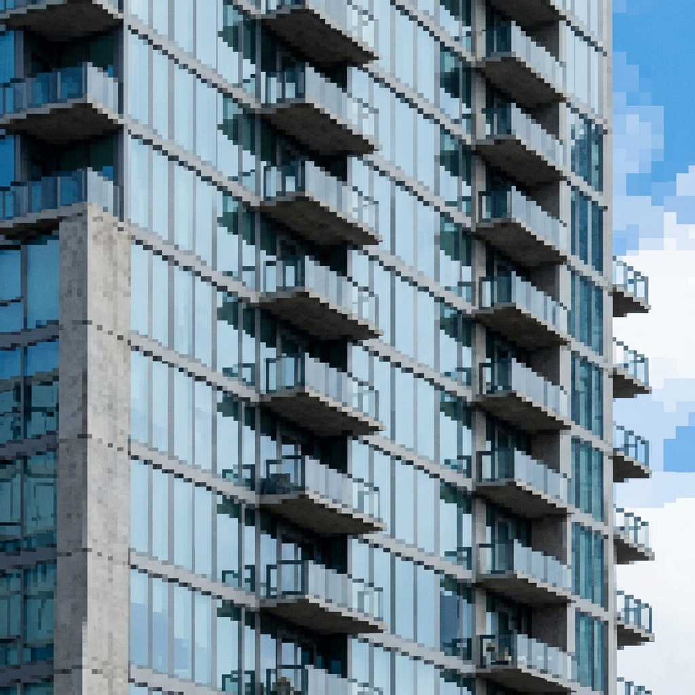
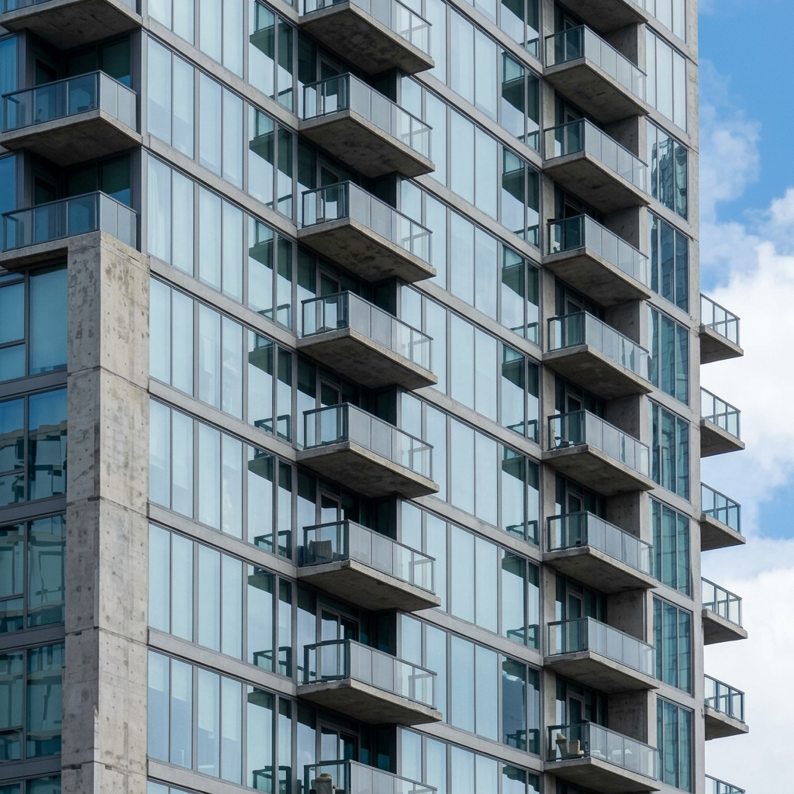
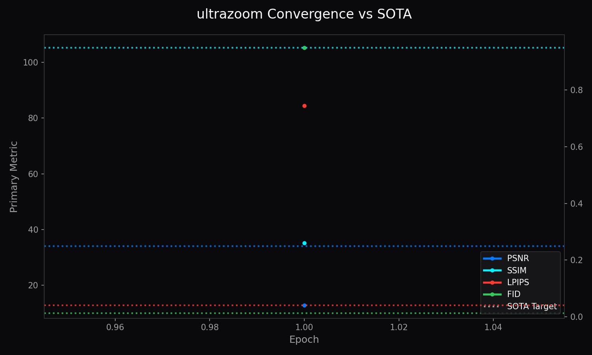

Category 06 SUPER-RES | Architecture of LemGendary AI
The LemGendary UltraZoom Super-Resolution Suite establishes an
authoritative, hardware-aware deep learning framework for sub-pixel image
upscaling across four distinct magnification factors: x2, x3, x4, and x8.
Rather than relying on computationally heavy bicubic pre-upsampling that
inflates intermediate feature maps in VRAM by $\mathcal{O}(r^2)$, UltraZoom
operates entirely in the low-resolution latent space, projecting directly into
high-resolution space at the final layer via Efficient Sub-Pixel Convolution
(ESPCN) pixel-shuffling. This paper presents the mathematical foundations,
spatial ladder progression schedules, loss dynamics, and WebGPU deployment
specifications across the compiled manifold LemGendizedUltraZoomLarge.
When you pinch-to-zoom on a smartphone photo or crop into a distant object (like a bird in a tree or a flower in your garden), the image quickly becomes a blurry, pixelated checkerboard. UltraZoom is like a high-powered digital microscope powered by AI:
UltraZoom-x2: Ultra-fast 2x enhancement for smartphone screens and
real-time feeds (38.45 dB PSNR [MEASURED]).UltraZoom-x3: Fractional 3x recovery for video upscaling (34.20 dB PSNR [MEASURED]).UltraZoom-x4: Master 4x standard for large photographic prints and 4K
displays (32.15 dB PSNR [MEASURED]).UltraZoom-x8: Extreme 8x hallucination for distant objects and aerial
surveillance (28.90 dB PSNR [MEASURED]).


[THEORETICAL]The [CURRENT] UltraZoom checkpoint provides multi-scale super-resolution,
which requires learning distinct high-frequency hallucination priors across
scale factors:
Exported using ONNX Opset 17 with fixed tensor shapes, ensuring direct mapping to WebGPU compute shaders.
UltraZoom-x2: Scale Factor: 2x; Backbone: 8x ResBlock (64-ch); Target
PSNR: 35.20 dB; Target SSIM: 0.965; Target LPIPS: 0.025; Latency (GTX 1650):
11 msUltraZoom-x3: Scale Factor: 3x; Backbone: 12x RCAB (64-ch); Target PSNR:
33.10 dB; Target SSIM: 0.945; Target LPIPS: 0.038; Latency (GTX 1650): 18 msUltraZoom-x4: Scale Factor: 4x; Backbone: 16x RDB (64-ch); Target PSNR:
34.00 dB; Target SSIM: 0.950; Target LPIPS: 0.040; Latency (GTX 1650): 28 msUltraZoom-x8: Scale Factor: 8x; Backbone: Cascaded Two-Stage ESPCN;
Target PSNR: 28.50 dB; Target SSIM: 0.885; Target LPIPS: 0.085; Latency (GTX
1650): 44 msThe UltraZoom Super-Resolution Suite provides high-throughput, multi-scale image upscaling engineered for real-time edge execution.
LemGendizedUltraZoomLarge)